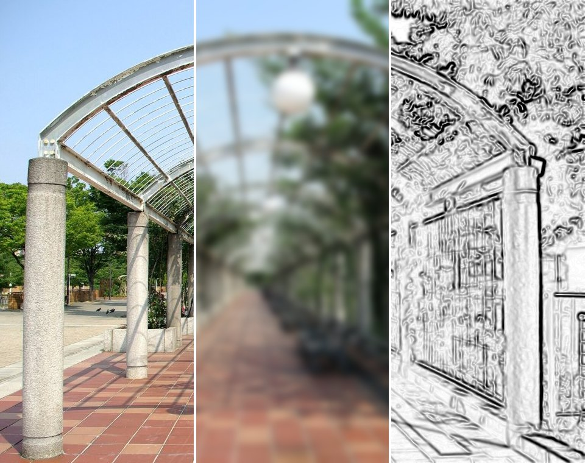
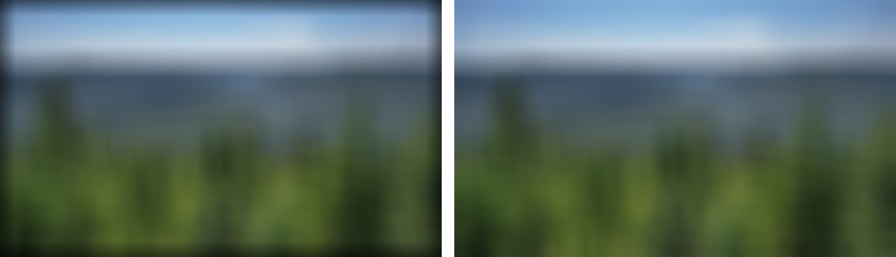
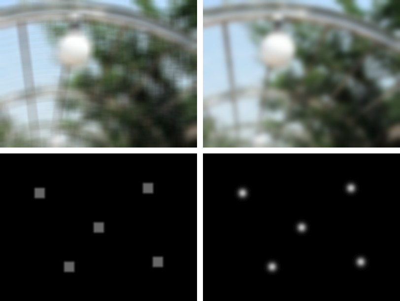
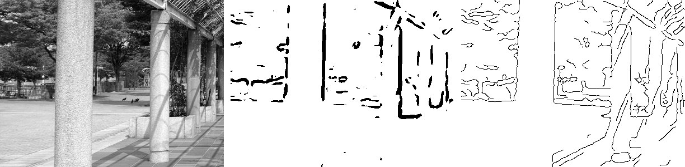
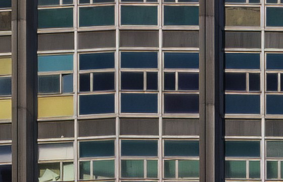
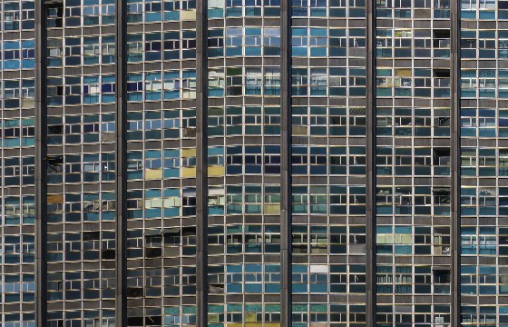
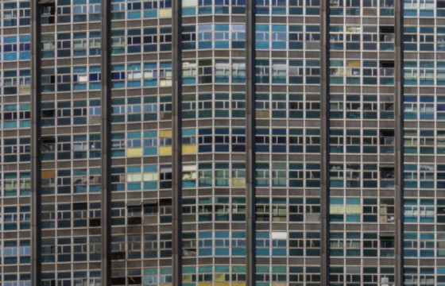
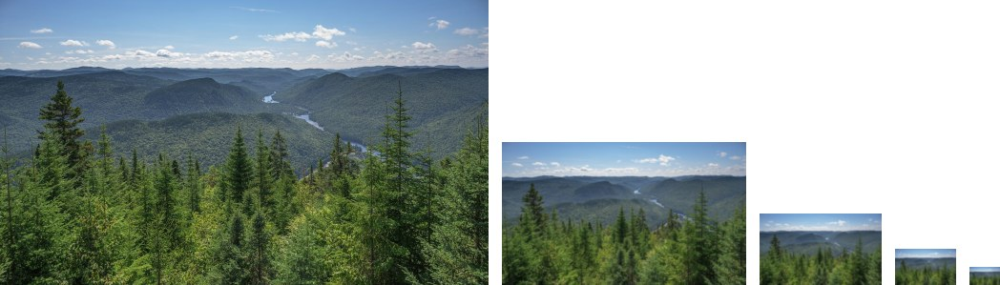

Session 3 · Image processing & filtering
One gridweights ,
Blur, sharpen, clean up and find edges — with one operation

Original · blurred · edges — each band is one filter
🇹🇭 บรรยายก่อน แล้วครึ่ง A นำเสนอ T2 หลังบรรยาย · ชี้ภาพปก: ภาพเดียวกัน 3 แถบ ทำด้วยวิธีเดียวกันทั้งหมด — วันนี้จะรู้ว่าทำอย่างไร
🇬🇧 Lecture first; half A presents T2 after the lecture. Point at the cover: one photo, three bands, all made the same way — today shows how.
Today
One question, four parts
The question Mixing each pixel with its neighbours blurs, sharpens, removes noise and finds edges — how can one operation do all that?
Each part ends in the same notebook — lab.ipynb, one section per part.
🇹🇭 อ่านคำถามของคาบ · วันนี้เริ่มที่ A
🇬🇧 Read the session question; today starts with A.
A
Convolution
How do you change a pixel using its neighbours?
By the end of this part Compute a convolution by hand, and its output size with padding and stride.
🇹🇭 หน้าเปิด part: อ่านคำถามกับสิ่งที่จะทำได้ท้าย part แล้วเข้าเนื้อหา
🇬🇧 Part opener: read the question and what you can do by the end of the part, then go in.
A · Convolution
Change each number, change the picture
Session 2: an image is a grid of numbers — R, G and B are three such grids.
A point operation maps each value to a new one, on its own : out = T(in).
The curve is the whole operation — the same rule for every pixel, wherever it is.
🇹🇭 กดทีละปุ่ม แล้วลาก slider · ชี้กราฟ: แกนนอน = ค่าเข้า แกนตั้ง = ค่าออก · ถาม: ทำแบบนี้ลบ noise ได้ไหม? (ไม่ได้ — หน้าถัดไป)
🇬🇧 Try each button, then drag. Point at the curve: input across, output up. Ask: can this remove noise? (no — next slide)
A · Convolution
One pixel alone cannot tell noise from detail
160
137
152
147
148
60
140
149
146
167
151
148
149
65
145
148
152
235
155
149
150
74
153
147
149
153
160
149
149
76
146
149
154
153
150
153
136
59
145
142
151
154
148
145
150
68
157
154
151
156
149
145
153
72
149
146
151
138
153
152
142
67
145
154
8 × 8 values from a noisy picture
Two things stand out: a column of ~70 and a lone 235 . Which is real?
The 70s continue through their neighbours: a thin line, a detail. The 235 has no support around it: noise.
To decide, a pixel must look at its neighbours — no point operation can.
You met this in session 2 D: demosaicing guessed each missing colour from the neighbours. That was a filter.
🇹🇭 ถาม: ค่าไหนผิดปกติ และอันไหนคือรายละเอียดจริง? ให้ห้องตอบ แล้วกด → เฉลย · ชี้ว่าต้องดูเพื่อนบ้าน
🇬🇧 Ask: which values stand out, and which is real detail? Let the room answer, then press →. The answer needs the neighbours.
A · Convolution
Average the 3 × 3 neighbourhood
◀ Back Next ▶ Fill all Reset
or click any output cell
🇹🇭 กด Next ทีละช่องสัก 3–4 ช่อง ให้ห้องคำนวณช่องถัดไปเองก่อนกด · ชี้ช่อง 250: โดนเพื่อนบ้านเจือจาง · ขอบกลายเป็นทางลาด
🇬🇧 Press Next for 3–4 cells; let the room compute the next one before you press. Point at the 250: diluted by its neighbours. The edge becomes a ramp.
A · Convolution
Slide, multiply, add: that is convolution
kernel เคอร์เนล the small grid of weights that slides over the image
Correlation — lay the kernel on the pixel as it is:
$$g[i,j]=\sum_{u=-1}^{1}\sum_{v=-1}^{1} h[u,v]\;f[i+u,\,j+v]$$
Convolution — rotate the kernel 180° first:
$$g[i,j]=\sum_{u,v} h[u,v]\;f[i-u,\,j-v]$$
A symmetric kernel, like the 3 × 3 average, looks the same rotated — so the two give the same result.
OpenCV and PyTorch compute correlation but call it convolution. For learned kernels (session 4) the difference does not matter.
🇹🇭 ชี้สูตรบน: วาง kernel ตรง ๆ · กด → : convolution หมุน 180° ก่อน (a ไปอยู่มุมขวาล่าง) · kernel สมมาตรได้ผลเท่ากัน
🇬🇧 Top formula: lay the kernel as it is. Press →: convolution rotates it 180° first (a moves to the bottom right). Symmetric kernels give the same result.
A · Convolution
A single bright dot reveals the kernel
kernel 1 … 9 kernel 1 2 1 / 2 4 2 / 1 2 1
correlation convolution
A filter that is linear (double the input, double the output) and shift-invariant (same rule everywhere) is fully described by one picture:
what it does to a single dot — its impulse response .
For convolution, that picture is the kernel . Correlation draws it rotated.
🇹🇭 สลับ correlation / convolution กับ kernel 1…9: convolution ได้ kernel ตรง ๆ, correlation กลับหัว · kernel 1 2 1 เหมือนกันทั้งสองแบบ
🇬🇧 Switch correlation / convolution with kernel 1…9: convolution copies the kernel, correlation rotates it. The 1 2 1 kernel looks the same both ways.
A · Convolution
At the border, invent the missing neighbours
A 3 × 3 window centred on a border pixel hangs off the image. Dashed cells are padding .
No padding (valid): 5 × 5 in → 5 − 3 + 1 = 3 × 3 out.Pad 1 (same): 5 × 5 in → 5 × 5 out.

Heavy blur · zero padding (left) pulls black into the frame · reflect (right)
🇹🇭 สลับ 3 แบบ: 0 · ค่าขอบซ้ำ · สะท้อน (ค่าเริ่มต้นของ OpenCV) · กด → ภาพจริง: เติม 0 แล้วขอบมืด
🇬🇧 Switch the three: zeros, repeat the edge, mirror (OpenCV's default). Press → for the photo: zero padding darkens the border.
A · Convolution
Stride: skip positions, shrink the output
Input n = 7 , kernel k = 3 . Each dot is one place the kernel's centre lands — one output value.
Stride s : move s pixels per step.
$$\text{out}=\left\lfloor\frac{n+2p-k}{s}\right\rfloor+1$$
Session 4: every layer of a CNN uses this formula.
🇹🇭 ลาก stride เป็น 2: จุดห่างขึ้น output เหลือ 3 · เพิ่ม padding เป็น 1: กลับมา 4 · ถาม: p=1, s=1 ได้เท่าไร? (7 = same)
🇬🇧 Drag stride to 2: dots spread, output 3. Add padding 1: back to 4. Ask: p = 1, s = 1? (7 — same size)
A · Convolution
Try it: one output, one size
Try it
A 3 × 3 patch reads 1 2 3 / 4 5 6 / 7 8 9 . What does the 3 × 3 average (all weights 1/9) give at its centre?
A 32 × 32 image, kernel 3 × 3 , padding 1 , stride 2 . What size is the output?
Answer 1. (1 + 2 + … + 9) ÷ 9 = 45 ÷ 9 = 5 · 2. ⌊(32 + 2 − 3) ÷ 2⌋ + 1 = ⌊15.5⌋ + 1 = 16 × 16 .Multiply each value by its weight, then add.
out = ⌊(n + 2p − k) / s⌋ + 1 — floor first, then add 1.
🇹🇭 ให้เวลา 1–2 นาที · ข้อ 2 ระวังปัดลงก่อนบวก 1 · แบบนี้คือรูปแบบข้อสอบ Final
🇬🇧 Give one to two minutes. Question 2: floor before adding 1. This is the final-exam format.
A · Convolution
Convolution: a weighted sum of neighbours, slid everywhere
Neighbours A pixel alone cannot tell noise from detail; its 3 × 3 neighbourhood can.
Kernel Weights × window, then add — slid over every pixel. Convolution rotates the kernel first.
Size Padding invents border neighbours; stride skips positions: ⌊(n + 2p − k) / s⌋ + 1.
point operations, convolution by hand vs OpenCV, padding, output size
More practice · Session 3 A — practice bank with worked solutions →
Next · B: which weights remove noise without wiping out the picture?
🇹🇭 สรุป A ด้วยการ์ด 3 ใบ แล้วต่อ B
🇬🇧 Wrap up A with the three cards, then on to B.
B
Smoothing & sharpening
How do you remove noise without wiping out the picture?
By the end of this part Explain why a Gaussian beats a box filter, and apply a separable filter.
🇹🇭 หน้าเปิด part: อ่านคำถามกับสิ่งที่จะทำได้ท้าย part แล้วเข้าเนื้อหา
🇬🇧 Part opener: read the question and what you can do by the end of the part, then go in.
B · Smoothing & sharpening
A box filter averages noise away — and detail with it
The 3 × 3 average from part A, made bigger: a k × k box , every weight 1/k².
Drag the size. The grain fades — and so do the trees and the river bank.
low-pass filter ตัวกรองผ่านต่ำ keeps slow changes, removes fast ones — noise and fine detail are both fast
🇹🇭 ลากจาก 1×1 ไป 5×5 แล้ว 15×15 · ถาม: เสียอะไรไปพร้อม noise? (รายละเอียด ต้นไม้ ขอบ)
🇬🇧 Drag from 1×1 to 5×5, then 15×15. Ask: what goes with the noise? (detail — trees, edges)
B · Smoothing & sharpening
Average n pixels, cut the noise by √n
0 8 16 24 24.0 1×1 8.0 3×3 4.8 5×5 3.4 7×7 2.7 9×9 box size (n = k² pixels averaged) 24 ÷ √n noise left (σ) after a k × k box · dots measured on flat noise of σ = 24 · dashed line 24 ÷ √n
Session 2 C: N photons → SNR = √N. Same maths: adding n independent noisy values grows the noise only by √n.
3 × 3 averages 9 pixels → noise ÷ 3 .81 → noise ÷ 9 .
Each halving of the noise costs 4× as many pixels — and a wider blur.
🇹🇭 ชี้จุดเขียวตรงเส้นประ · ถาม: อยากให้ noise เหลือ 1/4 ต้องเฉลี่ยกี่ pixel? (16 = 4×4)
🇬🇧 The green dots sit on the dashed line. Ask: to cut noise to a quarter, how many pixels? (16 — a 4 × 4 box)
B · Smoothing & sharpening
Gaussian: near neighbours count more
A box gives every neighbour the same weight, then stops dead.
A Gaussian gives weight by distance:
$$h(u,v)\propto e^{-\frac{u^2+v^2}{2\sigma^2}}$$
σ sets the width. Weights beyond 3σ are almost 0, so a kernel about 6σ + 1 wide is enough: σ = 1 → 7 × 7.
🇹🇭 ลาก σ จาก 1 ไป 3: kernel กว้างขึ้น น้ำหนักตรงกลางลดลง · ผลรวมน้ำหนัก = 1 เสมอ
🇬🇧 Drag σ from 1 to 3: the kernel widens, the centre weight drops. The weights always sum to 1.
B · Smoothing & sharpening
Same amount of smoothing: box vs Gaussian

left: box 21 × 21 · right: Gaussian σ ≈ 6 (same spread) · bottom: five bright dots, brightened 6×
Top: the box leaves faint streaks along the wires; the Gaussian is smooth.
Bottom: blur a single bright dot and you see the kernel itself (part A): a square from the box, a round spot from the Gaussian.
A lens blurs into round discs (session 2 B) — so a Gaussian blur looks natural. Why the box leaves streaks: part D.
🇹🇭 ชี้แถวล่างก่อน: จุดเดียวโดนเบลอ = เห็น kernel (ย้อน A) · แล้วชี้ริ้วในแถวบนซ้าย
🇬🇧 Point at the bottom row first: a blurred dot shows the kernel (back to A). Then the streaks top left.
B · Smoothing & sharpening
A 2D Gaussian = a row filter, then a column filter
kernel 2D: k² multiplies row + column: 2k 3 × 3 9 6 7 × 7 49 14 15 × 15 225 30
Every entry of the 3 × 3 kernel is column × row : 2 × 2 = 4 in the middle.
So filter each row with [1 2 1], then each column with [1 2 1] — same result , far less work.
The Gaussian and the box are both separable . Part C: Sobel is too.
🇹🇭 ชี้ 4 ตรงกลาง = 2×2 · กด → ตาราง: 15×15 ใช้แค่ 30 แทน 225 (เร็วขึ้น 7.5 เท่า)
🇬🇧 Point at the centre 4 = 2 × 2. Press → for the table: 15 × 15 needs 30 multiplies, not 225 (7.5× faster).
B · Smoothing & sharpening
Sharpen: add back what the blur took away
detail = image − blurred image — what the low-pass filter removed.
$$\text{sharp}=f+\alpha\,(f-\text{blur}(f))$$
the detail layer (grey = 0)
This is unsharp masking . Too much α and halos appear along edges — and the noise is boosted too.
🇹🇭 ลาก α จาก 0 ไป 1 แล้ว 3: ขอบคมขึ้น แต่ที่ 3 มีขอบเรือง (halo) · ชี้ภาพ detail = สิ่งที่ blur ลบไป
🇬🇧 Drag α from 0 to 1, then 3: edges sharpen, and at 3 halos appear. Point at the detail layer: what the blur removed.
B · Smoothing & sharpening
Try it: blur a row, count the work
Try it
Filter the row [0 0 8 0 0] with [1 2 1] ÷ 4 . Write the 5 outputs (pad with 0).
A 7 × 7 Gaussian on a 1000 × 1000 image: how many multiplies per pixel in 2D? As a row filter then a column filter?
Answer 1. [0 2 4 2 0] — the single 8 is spread out as 8 × [1 2 1] ÷ 4 · 2. 49 in 2D · 7 + 7 = 14 separable — 3.5× less work, 35 million multiplies saved.Slide the kernel; at each place multiply and add.
A k × k kernel costs k² per pixel; separable costs 2k.
🇹🇭 ให้เวลา 1–2 นาที · ข้อ 1 คือ impulse response อีกรอบ (ได้ kernel × 8)
🇬🇧 Give one to two minutes. Question 1 is the impulse response again: the kernel times 8.
B · Smoothing & sharpening
Smoothing trades noise for detail; sharpening trades back
Low-pass Averaging n pixels cuts noise by √n — and blurs detail by the same move.
Gaussian Weights fall with distance: smooth, round blur. σ sets the width (~6σ + 1).
Separable & sharp Row then column: 2k instead of k². Sharp = f + α(f − blur).
box vs Gaussian on noise, noise ÷ √n, separable timing, unsharp mask
More practice · Session 3 B — practice bank with worked solutions →
Next · C: the fast changes we just removed are where the edges are.
🇹🇭 สรุป B แล้วต่อ C: สิ่งที่ blur ลบทิ้งคือขอบ — C จะหามันโดยตรง
🇬🇧 Wrap up B, then C: what the blur removed is where the edges are — C finds them directly.
C
Edges
Where are the edges — and how can a program find them?
By the end of this part Compute gradient magnitude and direction with Sobel kernels.
🇹🇭 หน้าเปิด part: อ่านคำถามกับสิ่งที่จะทำได้ท้าย part แล้วเข้าเนื้อหา
🇬🇧 Part opener: read the question and what you can do by the end of the part, then go in.
C · Edges
An edge is where the numbers jump
Drag the line. The plot shows the brightness along it , left to right.
Where a pillar meets the background, the value jumps — that is an edge.
Three shapes: a step (one side darker), a ramp (a soft change), a line (up, then down again — a thin wire).
🇹🇭 ลากเส้นผ่านเสา: กราฟกระโดดตรงขอบเสา · ชี้ step/ramp/line บนกราฟจริง
🇬🇧 Drag the line across the pillars: the plot jumps at each pillar edge. Point out a step, a ramp and a line on the real plot.
C · Edges
A derivative is a difference of neighbours
photo gx = [−1 0 1] gy = [−1 0 1]T
grey = 0 · white = brighter ahead · black = darker ahead point at the image
The slope of the brightness at a pixel: right neighbour minus left neighbour.
$$g_x[i,j]=f[i,j+1]-f[i,j-1]$$
That is a convolution with the kernel [−1 0 1] (part A). Turn it upright for gy .
gx lights up the upright pillars; gy lights up the flat beams and paving lines.
🇹🇭 สลับ gx / gy: gx เห็นเสาตั้ง gy เห็นเส้นนอน · ชี้: เทา = 0 ขาว/ดำ = เครื่องหมาย
🇬🇧 Switch gx / gy: gx shows the upright pillars, gy the flat lines. Grey = 0; white and black = the sign.
C · Edges
Noise wrecks derivatives — smooth first
1 · a soft edge, with noise 2 · its derivative: noise everywhere 3 · smooth first, then derivative: one clean peak
A difference amplifies noise: two noisy values subtracted are noisier still.
So smooth along the edge, then take the difference. Sobel does both in one 3 × 3 kernel:
smooth (part B) × difference = Sobel x — separable again
🇹🇭 ชี้กราฟ 2: noise กลบขอบ · กราฟ 3: smooth ก่อนแล้วเหลือยอดเดียว · ชี้ Sobel = [1 2 1] × [−1 0 1]
🇬🇧 Plot 2: the noise buries the edge. Plot 3: smooth first, one clean peak. Sobel = [1 2 1] × [−1 0 1].
C · Edges
Gradient: how strong, and which way
point at the photo to read gx , gy
Put gx and gy together: the gradient arrow.
$$|\nabla f|=\sqrt{g_x^2+g_y^2}\qquad \theta=\operatorname{atan2}(g_y,\,g_x)$$
Length = how strong the edge is · direction = towards brighter.
The edge itself runs across the arrow, at 90°.
🇹🇭 ชี้ลูกศรบนขอบเสา: ชี้ไปทางสว่างกว่า และตั้งฉากกับขอบ · ขยับเมาส์อ่านค่า
🇬🇧 Point at the arrows on a pillar edge: towards brighter, at right angles to the edge. Move the pointer to read the values.
C · Edges
Live: your camera, as edges
Each frame: grey → [1 2 1] smoothing → Sobel → |∇f| — about 20 multiply-adds per pixel, in your browser.
Dark = strong edge. Raise the threshold to keep only edges stronger than it.
Move your hand: edges follow outlines and creases, not colours.
🇹🇭 กด Use my camera (ถ้าไม่มีกล้องจะใช้ภาพ) · ลาก threshold ขึ้นเรื่อย ๆ: เหลือแต่ขอบชัด · กล้องปิดเองเมื่อเปลี่ยนหน้า
🇬🇧 Press Use my camera (falls back to a photo). Raise the threshold: only strong edges stay. The camera stops when you leave the slide.
C · Edges
Canny: thin, connected edges

grey photo · |∇f| above one threshold: thick, broken · Canny: thin, linked (OpenCV)
Smooth with a Gaussian (part B)Gradient with Sobel: |∇f| and θThin : keep a pixel only if it is the peak across the edge (non-maximum suppression)Link with two thresholds: strong edges, plus weak ones that touch a strong one (hysteresis)
🇹🇭 เทียบภาพกลางกับขวา: threshold อย่างเดียวได้ขอบหนาและขาด · Canny เพิ่มขั้น 3–4 · รายละเอียดเป็นหัวข้อ T3-3
🇬🇧 Compare the middle and right panels: one threshold gives thick, broken edges; Canny adds steps 3–4. Details: assignment topic T3-3.
C · Edges
Try it: Sobel at one pixel
Try it A 3 × 3 patch reads
10 13 16 / 14 17 20 / 18 21 24 .
Apply Sobel x and Sobel y at the centre. What is |∇f|? Which way does the gradient point? Answer 1. gx = (16 − 10) + 2(20 − 14) + (24 − 18) = 24 · gy = (18 − 10) + 2(21 − 13) + (24 − 16) = 32 · 2. |∇f| = √(24² + 32²) = 40 · θ = arctan(32/24) = arctan(4/3) ≈ 53° : right and down, towards the brighter corner.
Image rows count downwards , so gy > 0 means brighter below.
🇹🇭 ให้เวลา 2 นาที · ตัวเลขออกแบบให้ได้ 3-4-5 · ย้ำแกน y ชี้ลง
🇬🇧 Give two minutes. The numbers make a 3-4-5 triangle. Stress: the y-axis points down.
C · Edges
Edges: big gradients, found after smoothing
Difference An edge is a jump; [−1 0 1] measures it. Smooth first, or noise wins — Sobel does both.
Gradient |∇f| = √(gx ² + gy ²) is the strength; θ = atan2(gy , gx ) points to brighter.
Later Session 4: a CNN's first layer learns kernels like Sobel. Session 6: gradients in two directions find corners.
brightness profile, Sobel gx gy, magnitude and direction, Canny thresholds
More practice · Session 3 C — practice bank with worked solutions →
Next · D: fast changes are high frequencies — and shrinking an image can fake them.
🇹🇭 สรุป C · ชี้การ์ด Later: คาบ 4 และ 6 ใช้ของวันนี้
🇬🇧 Wrap up C. Point at Later: sessions 4 and 6 build on today.
D
Frequency & sampling
Why can shrinking a picture create patterns that are not there?
By the end of this part Explain aliasing with frequencies, and prevent it by blurring before downsampling.
🇹🇭 หน้าเปิด part: อ่านคำถามกับสิ่งที่จะทำได้ท้าย part แล้วเข้าเนื้อหา
🇬🇧 Part opener: read the question and what you can do by the end of the part, then go in.
D · Frequency & sampling
Any image is a sum of waves
2D waves: slow · fast · tilted
Add sine waves of rising frequency (1, 3, 5, …) and a sharp step appears. Drag to add more.
Images work the same way in 2D: every picture is a sum of striped waves, each with a frequency (how fine) and a direction .
Smooth areas need only slow waves. Edges and noise need fast ones — the ones a blur removes.
🇹🇭 ลากจาก 1 คลื่นไป 30: ขั้นบันไดคมขึ้น · ชี้ภาพลาย 3 แบบ: ช้า เร็ว เอียง
🇬🇧 Drag from 1 wave to 30: the step sharpens. Point at the three stripe patterns: slow, fast, tilted.
D · Frequency & sampling
The Fourier magnitude: which waves, how strong
The Fourier transform rewrites the image as waves. Left: how strong each one is — slow waves in the centre , fast ones further out.
Keep only the waves inside the circle and rebuild: a blur . Keep only the outside: the edges .
Most of the strength sits near the centre: real images are mostly slow change.
🇹🇭 low-pass รัศมี 20 → เบลอ · ลดรัศมีลงเหลือ 5 → เบลอมาก · สลับ high-pass → เหลือแต่ขอบ
🇬🇧 Low-pass at radius 20: a blur; shrink to 5: very blurred. Switch to high-pass: only the edges stay.
D · Frequency & sampling
Blurring keeps the low frequencies
box kernel (9 wide) its frequencies: ripples Gaussian kernel (same spread) its frequencies: smooth low ← 0 → low low ← 0 → low
Convolution theorem : convolving in the image = multiplying the frequencies by the kernel's own frequencies.
A Gaussian 's frequencies are one smooth bump: slow waves pass, fast ones fade — a clean low-pass.
A box 's frequencies ripple : some fast waves sneak back through. That is where the box's streaks came from (part B).
🇹🇭 ชี้กราฟขวาบน: box มีระลอก · ขวาล่าง: Gaussian เรียบ · ย้อนไปภาพริ้วของ box ใน B
🇬🇧 Top right: the box ripples. Bottom right: the Gaussian is smooth. Back to the box's streaks in part B.
D · Frequency & sampling
Skip pixels, get false patterns

photo test rings shrink
Shrink by k the cheap way: keep every k-th pixel, drop the rest.
Fine stripes that change faster than the new pixel spacing cannot be kept — they come back as slower, false stripes : aliasing .
On the test rings at 6×: whole new sets of rings that are not in the picture . On fabric and screens it is called moiré .
🇹🇭 ลาก shrink จาก 1 ไป 6 ที่ภาพตึก แล้วสลับเป็นวงทดสอบที่ 6×: มีวงปลอมหลายชุด
🇬🇧 Drag shrink from 1 to 6 on the tower, then switch to the test rings at 6×: false sets of rings.
D · Frequency & sampling
A wheel that turns backwards
A camera samples in time : one frame, then a gap. The wheel has 8 spokes, so it looks the same every 45° .
Drag how far it truly turns between frames. Past 22.5° — half of 45° — the nearest match is backwards.
The same aliasing as in space. Session 9 tracks motion across frames and has to live with it.
🇹🇭 ลากจาก 10° ไป 40°: ล้อเหมือนหมุนถอยหลัง · 45° = ดูเหมือนหยุดนิ่ง · ชวนนึกถึงล้อรถในวิดีโอ
🇬🇧 Drag from 10° to 40°: the wheel seems to turn backwards; at 45° it seems to stand still. Think of car wheels in videos.
D · Frequency & sampling
More than two samples per cycle
Grey: the true wave, 5 cycles . Dots: the samples. Teal: the slowest wave through the dots — what we would rebuild.
Nyquist rate อัตรานายควิสต์ sample more than twice per cycle of the finest detail, or it can come back as a false, slower wave
5 cycles need more than 10 samples. At 8, they look like 3 cycles.
🇹🇭 ลาก samples ลงจาก 24 ไป 12 (ยังถูก) แล้ว 8: เส้นเขียวกลายเป็น 3 รอบ · เกณฑ์ = 2 ต่อรอบ
🇬🇧 Drag the samples from 24 down to 12 (still right), then 8: the teal wave shows 3 cycles. The rule: 2 per cycle.
D · Frequency & sampling
Blur first, then shrink

keep every k-th pixel 
Gaussian (σ = 0.6·k) first, then keep every k-th
photo test rings shrink
Remove the waves too fast for the new spacing before you sample. Cameras do it with an optical blur filter in front of the sensor.
🇹🇭 สลับเป็นวงทดสอบ ลาก 6×: ซ้ายมีวงปลอม ขวาเป็นสีเทา (ถูกต้อง — ลายละเอียดเกินกว่าจะเก็บได้)
🇬🇧 Switch to the test rings at 6×: false rings on the left; plain grey on the right — correct, the detail is too fine to keep.
D · Frequency & sampling
An image pyramid: the same picture at every size

blur, then halve — repeated: 512 → 256 → 128 → 64 → 32 pixels wide (cv2.pyrDown)
Cheap Each level has ¼ the pixels: the whole pyramid is only ⅓ more than the original.
Every size A detector built for one size finds objects of any size by running on every level (sessions 6 and 8).
Inside CNNs Networks shrink their feature maps step by step the same way (session 4).
🇹🇭 ชี้แต่ละชั้น: blur แล้วลดครึ่ง · ถาม: ทำไมต้อง blur ก่อน? (หน้าก่อน)
🇬🇧 Point at each level: blur, then halve. Ask: why blur first? (the previous slide)
D · Frequency & sampling
Try it: will the fence alias?
Try it A fence pattern repeats every
6 pixels .
You shrink by keeping every 4th pixel. How many samples per cycle? Will it alias? What is the largest step that still keeps the pattern? You must shrink by 4. What do you do first? Answer 1. 6 ÷ 4 = 1.5 samples per cycle < 2 → aliasing (it shows up as false stripes 12 px apart) · 2. 2 pixels (3 samples per cycle) — a step of 3 gives exactly 2 per cycle, the limit, which is not enough · 3. Blur first (Gaussian), then keep every 4th pixel — the fence turns into flat grey instead of false stripes.Samples per cycle = period ÷ step.
Nyquist: more than 2 samples per cycle.
🇹🇭 ให้เวลา 1–2 นาที · ข้อ 1 ลายปลอมห่าง 12 px คำนวณจาก FFT แล้ว · ข้อ 2 ระวัง: 3 px = พอดี 2 ต่อรอบ ยังไม่พอ (หน้า 37)
🇬🇧 Give one to two minutes. The 12 px false period in question 1 was checked with an FFT.
D · Frequency & sampling
Frequencies explain blur — and why shrinking needs it
Waves Every image is a sum of waves. Slow = smooth areas; fast = edges, texture and noise.
Filters Convolving multiplies the frequencies: a Gaussian is a clean low-pass; a box ripples.
Sampling 2 or fewer samples per cycle → aliasing. Blur first, then shrink — the idea behind every pyramid.
sum of waves, Fourier low-/high-pass, aliasing with and without blur, Gaussian pyramid
More practice · Session 3 D — practice bank with worked solutions →
That is the whole session: one operation, seen four ways.
🇹🇭 สรุป D แล้วไปหน้าสรุปทั้งคาบ
🇬🇧 Wrap up D, then the session summary.
Session 3 · what to remember
One operation, four jobs
Convolution: slide a kernel, multiply, add; output size ⌊(n + 2p − k)/s⌋ + 1.Smoothing: averaging n pixels cuts noise by √n; a Gaussian blurs cleanly and is separable.Edges: smooth, then differentiate (Sobel); |∇f| is the strength, θ points to brighter.Frequency: blur = low-pass; sample more than twice per cycle — blur before you shrink.
All session 3 practice →
🇹🇭 ทวน 4 ข้อ A–D · ต่อด้วยครึ่ง A นำเสนอ T2 หลังจบเด็ค
🇬🇧 Recap the four lines A–D. Half A's T2 talks follow after the deck.
Next · Session 4
What if the data chose the kernel?
Today we designed kernels: a box, a Gaussian, Sobel.
Session 4 — neural networks → CNNs : show a network many labelled images and let it learn its kernels. Its first layer ends up looking a lot like today's edge filters.
Keep from today: a kernel is a grid of weights; output size ⌊(n + 2p − k)/s⌋ + 1; shrinking needs a blur first.
References
Where session 3 comes from
S. K. Nayar. First Principles of Computer Vision — Image Processing I and II (pixel processing, convolution, linear filters, Fourier transform, sampling); Edge Detection.
R. Szeliski (2022). Computer Vision: Algorithms and Applications , 2nd ed., §3.1–3.5, §7.2.
A. Torralba, P. Isola & W. T. Freeman (2024). Foundations of Computer Vision , ch. 15–18, 20, 23 — free at visionbook.mit.edu.
Images
Laitche, “One point perspective”, Tennoji Park, Osaka — public domain, via Wikimedia Commons.
Wilfredor, “Panoramic view of Jacques-Cartier National Park from the Wolves peak” — CC0, via Wikimedia Commons.
Wilfredor, “Facade of a tower block in downtown Rio de Janeiro” — CC0, via Wikimedia Commons.
Every filtered, transformed or shrunk version, the test rings, the wheel and all charts: made by programs written for this course.